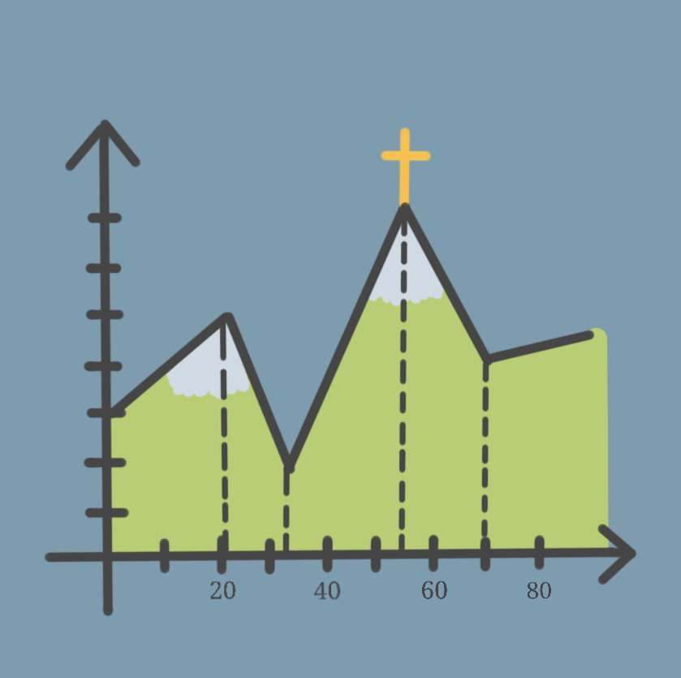
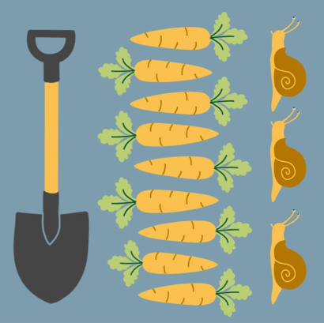
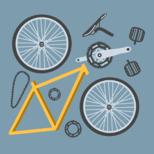

Finde dein System
Du weißt nicht, was du hier überhaupt suchst?
Finde mit diesem kleinen Quiz heraus, wo du System in dein Leben bringen könntest.
Wähle jeweils die auf dich am besten zutreffende Antwort aus, um direkt Themenvorschläge zu erhalten, die zu deinen Interessen passen.
Dein System könnte hier liegen:
-

Wandern
Die Seven Summits von Bodenmais - Natur pur auf den höchsten Gipfeln im Bayerischen Wald
-

Garten
Unkrautpflege, Schneckenparadies und Ernteglück - Im Einklang mit der Natur mit einem bienenfreundlichen und pflegeleichten Gemüsegarten
-

Gaming online
Genshin Impact - Tipps und Tricks rund um das beliebte Fantasy-Action-Rollenspiel
-
Gaming offline
Terraforming Mars - Wir erobern uns systematisch den Mars
-

Radfahren
On the road auf zwei Rädern - Touren, Kauftipps und mehr
404 - not found
Sorry, aber du scheinst auf einem anderen Planeten zu leben.
Auf dieser Website wirst du leider nicht glücklich werden.
Mach es dir lieber mit deiner Tüte Chips auf der Couch gemütlich und zappe dich systematisch durch das Fernsehprogramm.